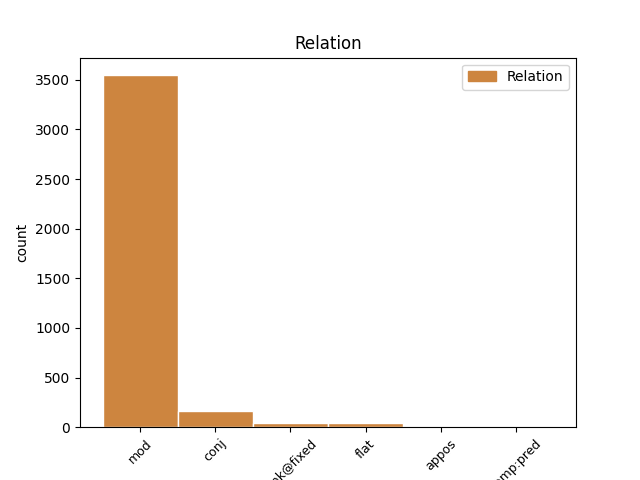
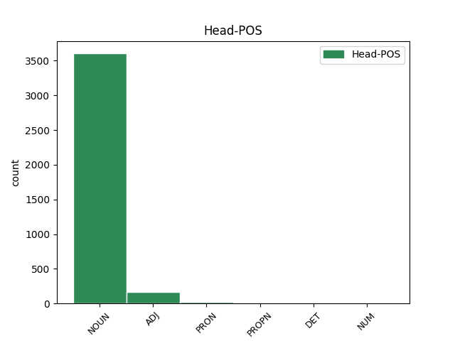
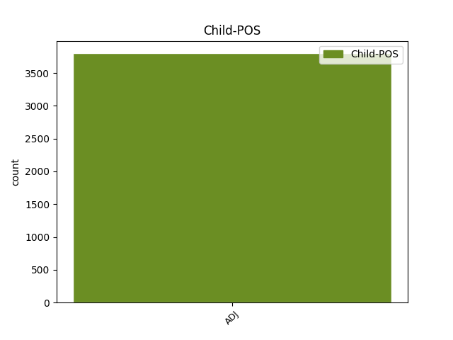

Distribution of features within this leaf



Agreement Rules sorted by frequency.
- When the dependent token is the modifer(mod) of the head token, and the head token is NOUN and the dependent token is ADJ.
1 Dacă _ _ _ _ 0 _ _ _
2 V _ _ _ _ 0 _ _ _
3 este _ _ _ _ 0 _ _ _
4 aproape _ _ _ _ 0 _ _ _
5 de _ _ _ _ 0 _ _ _
6 zero _ _ _ _ 0 _ _ _
7 ( _ _ _ _ 0 _ _ _
8 V _ _ _ _ 0 _ _ _
9 < _ _ _ _ 0 _ _ _
10 35% _ _ _ _ 0 _ _ _
11 ) _ _ _ _ 0 _ _ _
12 , _ _ _ _ 0 _ _ _
13 atunci _ _ _ _ 0 _ _ _
14 populația populație NOUN Ncfsry Case=Acc,Nom|Definite=Def|Gender=Fem|Number=Sing 0 _ _ _
15 studiată studiat ADJ Afpfsrn Case=Acc,Nom|Definite=Ind|Degree=Pos|Gender=Fem|Number=Sing 14 mod _ _
16 statistic _ _ _ _ 0 _ _ _
17 este _ _ _ _ 0 _ _ _
18 omogenă _ _ _ _ 0 _ _ _
19 și _ _ _ _ 0 _ _ _
20 media _ _ _ _ 0 _ _ _
21 m _ _ _ _ 0 _ _ _
22 este _ _ _ _ 0 _ _ _
23 reprezentativă _ _ _ _ 0 _ _ _
24 pentru _ _ _ _ 0 _ _ _
25 această _ _ _ _ 0 _ _ _
26 populație _ _ _ _ 0 _ _ _
27 . _ _ _ _ 0 _ _ _
1 Plaja _ _ _ _ 0 _ _ _
2 P _ _ _ _ 0 _ _ _
3 este _ _ _ _ 0 _ _ _
4 diferența _ _ _ _ 0 _ _ _
5 dintre _ _ _ _ 0 _ _ _
6 cea _ _ _ _ 0 _ _ _
7 mai _ _ _ _ 0 _ _ _
8 mare mare ADJ Afpfsrn Case=Acc,Nom|Definite=Ind|Degree=Pos|Gender=Fem|Number=Sing 0 _ _ _
9 ( _ _ _ _ 0 _ _ _
10 H _ _ _ _ 0 _ _ _
11 ) _ _ _ _ 0 _ _ _
12 și _ _ _ _ 0 _ _ _
13 cea _ _ _ _ 0 _ _ _
14 mai _ _ _ _ 0 _ _ _
15 mică mic ADJ Afpfsrn Case=Acc,Nom|Definite=Ind|Degree=Pos|Gender=Fem|Number=Sing 8 conj _ _
16 ( _ _ _ _ 0 _ _ _
17 L _ _ _ _ 0 _ _ _
18 ) _ _ _ _ 0 _ _ _
19 valoare _ _ _ _ 0 _ _ _
20 a _ _ _ _ 0 _ _ _
21 valorilor _ _ _ _ 0 _ _ _
22 xi _ _ _ _ 0 _ _ _
23 dintr- _ _ _ _ 0 _ _ _
24 un _ _ _ _ 0 _ _ _
25 set _ _ _ _ 0 _ _ _
26 de _ _ _ _ 0 _ _ _
27 date _ _ _ _ 0 _ _ _
28 . _ _ _ _ 0 _ _ _
1 România _ _ _ _ 0 _ _ _
2 este _ _ _ _ 0 _ _ _
3 membru _ _ _ _ 0 _ _ _
4 al _ _ _ _ 0 _ _ _
5 NATO _ _ _ _ 0 _ _ _
6 ( _ _ _ _ 0 _ _ _
7 din _ _ _ _ 0 _ _ _
8 29 _ _ _ _ 0 _ _ _
9 martie _ _ _ _ 0 _ _ _
10 2004 _ _ _ _ 0 _ _ _
11 ) _ _ _ _ 0 _ _ _
12 , _ _ _ _ 0 _ _ _
13 al _ _ _ _ 0 _ _ _
14 Uniunii uniune NOUN Ncfsoy Case=Dat,Gen|Definite=Def|Gender=Fem|Number=Sing 0 _ _ _
15 Europene european ADJ Afpfson Case=Dat,Gen|Definite=Ind|Degree=Pos|Gender=Fem|Number=Sing 14 unk@fixed _ _
16 ( _ _ _ _ 0 _ _ _
17 de _ _ _ _ 0 _ _ _
18 la _ _ _ _ 0 _ _ _
19 1 _ _ _ _ 0 _ _ _
20 ianuarie _ _ _ _ 0 _ _ _
21 2007 _ _ _ _ 0 _ _ _
22 ) _ _ _ _ 0 _ _ _
23 , _ _ _ _ 0 _ _ _
24 al _ _ _ _ 0 _ _ _
25 Uniunii _ _ _ _ 0 _ _ _
26 Latine _ _ _ _ 0 _ _ _
27 , _ _ _ _ 0 _ _ _
28 al _ _ _ _ 0 _ _ _
29 Francofoniei _ _ _ _ 0 _ _ _
30 și _ _ _ _ 0 _ _ _
31 al _ _ _ _ 0 _ _ _
32 OSCE _ _ _ _ 0 _ _ _
33 . _ _ _ _ 0 _ _ _
1 Se _ _ _ _ 0 _ _ _
2 știe _ _ _ _ 0 _ _ _
3 că _ _ _ _ 0 _ _ _
4 Banatul _ _ _ _ 0 _ _ _
5 Severinului _ _ _ _ 0 _ _ _
6 , _ _ _ _ 0 _ _ _
7 datând _ _ _ _ 0 _ _ _
8 de _ _ _ _ 0 _ _ _
9 la _ _ _ _ 0 _ _ _
10 începutul _ _ _ _ 0 _ _ _
11 secolului _ _ _ _ 0 _ _ _
12 al _ _ _ _ 0 _ _ _
13 XIII _ _ _ _ 0 _ _ _
14 -lea _ _ _ _ 0 _ _ _
15 , _ _ _ _ 0 _ _ _
16 a _ _ _ _ 0 _ _ _
17 devenit _ _ _ _ 0 _ _ _
18 feudă _ _ _ _ 0 _ _ _
19 a _ _ _ _ 0 _ _ _
20 Țării țară NOUN Ncfsoy Case=Dat,Gen|Definite=Def|Gender=Fem|Number=Sing 0 _ _ _
21 Românești românesc ADJ Afpfson Case=Dat,Gen|Definite=Ind|Degree=Pos|Gender=Fem|Number=Sing 20 flat _ _
22 începând _ _ _ _ 0 _ _ _
23 cu _ _ _ _ 0 _ _ _
24 Basarab _ _ _ _ 0 _ _ _
25 I _ _ _ _ 0 _ _ _
26 , _ _ _ _ 0 _ _ _
27 domnind _ _ _ _ 0 _ _ _
28 între _ _ _ _ 0 _ _ _
29 1322 _ _ _ _ 0 _ _ _
30 și _ _ _ _ 0 _ _ _
31 1352 _ _ _ _ 0 _ _ _
32 . _ _ _ _ 0 _ _ _
1 Pentru _ _ _ _ 0 _ _ _
2 a _ _ _ _ 0 _ _ _
3 ilustra _ _ _ _ 0 _ _ _
4 însă _ _ _ _ 0 _ _ _
5 diferența _ _ _ _ 0 _ _ _
6 dintre _ _ _ _ 0 _ _ _
7 probabilități _ _ _ _ 0 _ _ _
8 și _ _ _ _ 0 _ _ _
9 statistică _ _ _ _ 0 _ _ _
10 să _ _ _ _ 0 _ _ _
11 considerăm _ _ _ _ 0 _ _ _
12 două _ _ _ _ 0 _ _ _
13 urne _ _ _ _ 0 _ _ _
14 : _ _ _ _ 0 _ _ _
15 una _ _ _ _ 0 _ _ _
16 probabilistă _ _ _ _ 0 _ _ _
17 și _ _ _ _ 0 _ _ _
18 una unul PRON Pi3fsr Case=Acc,Nom|Gender=Fem|Number=Sing|Person=3|PronType=Ind 0 _ _ _
19 statistică statistic ADJ Afpfsrn Case=Acc,Nom|Definite=Ind|Degree=Pos|Gender=Fem|Number=Sing 18 mod _ SpaceAfter=No
20 . _ _ _ _ 0 _ _ _
1 Aceste _ _ _ _ 0 _ _ _
2 influențe _ _ _ _ 0 _ _ _
3 au _ _ _ _ 0 _ _ _
4 acționat _ _ _ _ 0 _ _ _
5 atât _ _ _ _ 0 _ _ _
6 asupra _ _ _ _ 0 _ _ _
7 muzicii _ _ _ _ 0 _ _ _
8 folclorice _ _ _ _ 0 _ _ _
9 , _ _ _ _ 0 _ _ _
10 cât _ _ _ _ 0 _ _ _
11 și _ _ _ _ 0 _ _ _
12 a _ _ _ _ 0 _ _ _
13 muzicii _ _ _ _ 0 _ _ _
14 erudite _ _ _ _ 0 _ _ _
15 ( _ _ _ _ 0 _ _ _
16 muzică _ _ _ _ 0 _ _ _
17 religioasă religios ADJ Afpfsrn Case=Acc,Nom|Definite=Ind|Degree=Pos|Gender=Fem|Number=Sing 0 _ _ _
18 " _ _ _ _ 0 _ _ _
19 gregoriană gregorian ADJ Afpfsrn Case=Acc,Nom|Definite=Ind|Degree=Pos|Gender=Fem|Number=Sing 17 mod _ _
20 în _ _ _ _ 0 _ _ _
21 apus _ _ _ _ 0 _ _ _
22 și _ _ _ _ 0 _ _ _
23 bizantină _ _ _ _ 0 _ _ _
24 în _ _ _ _ 0 _ _ _
25 răsărit _ _ _ _ 0 _ _ _
26 " _ _ _ _ 0 _ _ _
27 și _ _ _ _ 0 _ _ _
28 muzică _ _ _ _ 0 _ _ _
29 cultă _ _ _ _ 0 _ _ _
30 laică _ _ _ _ 0 _ _ _
31 ) _ _ _ _ 0 _ _ _
32 . _ _ _ _ 0 _ _ _
1 Liderii _ _ _ _ 0 _ _ _
2 României România PROPN Npfsoy Case=Dat,Gen|Definite=Def|Gender=Fem|Number=Sing 0 _ _ _
3 postdecembriste postdecembrist ADJ Afpfson Case=Dat,Gen|Definite=Ind|Degree=Pos|Gender=Fem|Number=Sing 2 mod _ _
4 au _ _ _ _ 0 _ _ _
5 făcut _ _ _ _ 0 _ _ _
6 declarații _ _ _ _ 0 _ _ _
7 publice _ _ _ _ 0 _ _ _
8 în _ _ _ _ 0 _ _ _
9 ceea _ _ _ _ 0 _ _ _
10 ce _ _ _ _ 0 _ _ _
11 privește _ _ _ _ 0 _ _ _
12 strângerea _ _ _ _ 0 _ _ _
13 relațiilor _ _ _ _ 0 _ _ _
14 cu _ _ _ _ 0 _ _ _
15 alte _ _ _ _ 0 _ _ _
16 țări _ _ _ _ 0 _ _ _
17 europene _ _ _ _ 0 _ _ _
18 și _ _ _ _ 0 _ _ _
19 , _ _ _ _ 0 _ _ _
20 de _ _ _ _ 0 _ _ _
21 asemenea _ _ _ _ 0 _ _ _
22 , _ _ _ _ 0 _ _ _
23 în _ _ _ _ 0 _ _ _
24 ceea _ _ _ _ 0 _ _ _
25 ce _ _ _ _ 0 _ _ _
26 privește _ _ _ _ 0 _ _ _
27 ajutorul _ _ _ _ 0 _ _ _
28 dat _ _ _ _ 0 _ _ _
29 acestora _ _ _ _ 0 _ _ _
30 în _ _ _ _ 0 _ _ _
31 procesul _ _ _ _ 0 _ _ _
32 integrării _ _ _ _ 0 _ _ _
33 euro-atlantice _ _ _ _ 0 _ _ _
34 , _ _ _ _ 0 _ _ _
35 în _ _ _ _ 0 _ _ _
36 special _ _ _ _ 0 _ _ _
37 în _ _ _ _ 0 _ _ _
38 cazul _ _ _ _ 0 _ _ _
39 Moldovei _ _ _ _ 0 _ _ _
40 , _ _ _ _ 0 _ _ _
41 Ucrainei _ _ _ _ 0 _ _ _
42 și _ _ _ _ 0 _ _ _
43 Georgiei _ _ _ _ 0 _ _ _
44 . _ _ _ _ 0 _ _ _
1 Principalele _ _ _ _ 0 _ _ _
2 industrii _ _ _ _ 0 _ _ _
3 ale _ _ _ _ 0 _ _ _
4 României _ _ _ _ 0 _ _ _
5 sunt _ _ _ _ 0 _ _ _
6 cea cel DET Tdfsr Case=Acc,Nom|Gender=Fem|Number=Sing|PronType=Dem 0 _ _ _
7 textilă textil ADJ Afpfsrn Case=Acc,Nom|Definite=Ind|Degree=Pos|Gender=Fem|Number=Sing 6 mod _ _
8 și _ _ _ _ 0 _ _ _
9 de _ _ _ _ 0 _ _ _
10 încălțăminte _ _ _ _ 0 _ _ _
11 , _ _ _ _ 0 _ _ _
12 industria _ _ _ _ 0 _ _ _
13 metalurgică _ _ _ _ 0 _ _ _
14 , _ _ _ _ 0 _ _ _
15 de _ _ _ _ 0 _ _ _
16 mașini _ _ _ _ 0 _ _ _
17 ușoare _ _ _ _ 0 _ _ _
18 și _ _ _ _ 0 _ _ _
19 de _ _ _ _ 0 _ _ _
20 ansamblare _ _ _ _ 0 _ _ _
21 de _ _ _ _ 0 _ _ _
22 mașini _ _ _ _ 0 _ _ _
23 , _ _ _ _ 0 _ _ _
24 minieră _ _ _ _ 0 _ _ _
25 , _ _ _ _ 0 _ _ _
26 de _ _ _ _ 0 _ _ _
27 prelucrare _ _ _ _ 0 _ _ _
28 a _ _ _ _ 0 _ _ _
29 lemnului _ _ _ _ 0 _ _ _
30 , _ _ _ _ 0 _ _ _
31 a _ _ _ _ 0 _ _ _
32 materialelor _ _ _ _ 0 _ _ _
33 de _ _ _ _ 0 _ _ _
34 construcții _ _ _ _ 0 _ _ _
35 , _ _ _ _ 0 _ _ _
36 chimică _ _ _ _ 0 _ _ _
37 , _ _ _ _ 0 _ _ _
38 alimentară _ _ _ _ 0 _ _ _
39 și _ _ _ _ 0 _ _ _
40 cea _ _ _ _ 0 _ _ _
41 de _ _ _ _ 0 _ _ _
42 rafinare _ _ _ _ 0 _ _ _
43 a _ _ _ _ 0 _ _ _
44 petrolului _ _ _ _ 0 _ _ _
45 . _ _ _ _ 0 _ _ _
1 Complicația _ _ _ _ 0 _ _ _
2 survine _ _ _ _ 0 _ _ _
3 în _ _ _ _ 0 _ _ _
4 timpul _ _ _ _ 0 _ _ _
5 procesului _ _ _ _ 0 _ _ _
6 real _ _ _ _ 0 _ _ _
7 de _ _ _ _ 0 _ _ _
8 naștere _ _ _ _ 0 _ _ _
9 , _ _ _ _ 0 _ _ _
10 cauzată _ _ _ _ 0 _ _ _
11 de _ _ _ _ 0 _ _ _
12 dificultăți _ _ _ _ 0 _ _ _
13 în _ _ _ _ 0 _ _ _
14 travaliu _ _ _ _ 0 _ _ _
15 , _ _ _ _ 0 _ _ _
16 sau _ _ _ _ 0 _ _ _
17 ' _ _ _ _ 0 _ _ _
18 anoxie anoxie NOUN Ncfsrn Case=Acc,Nom|Definite=Ind|Gender=Fem|Number=Sing 0 _ _ _
19 " _ _ _ _ 0 _ _ _
20 , _ _ _ _ 0 _ _ _
21 cunoscută cunoscut ADJ Afpfsrn Case=Acc,Nom|Definite=Ind|Degree=Pos|Gender=Fem|Number=Sing 18 appos _ _
22 ca _ _ _ _ 0 _ _ _
23 înfometare _ _ _ _ 0 _ _ _
24 de _ _ _ _ 0 _ _ _
25 oxigen _ _ _ _ 0 _ _ _
26 . _ _ _ _ 0 _ _ _
1 Este _ _ _ _ 0 _ _ _
2 adevărat _ _ _ _ 0 _ _ _
3 că _ _ _ _ 0 _ _ _
4 primul prim NUM Momsrly Case=Acc,Nom|Definite=Def|Gender=Masc|Number=Sing|NumForm=Word|NumType=Ord 0 _ _ _
5 și _ _ _ _ 0 _ _ _
6 singurul singur ADJ Afpmsry Case=Acc,Nom|Definite=Def|Degree=Pos|Gender=Masc|Number=Sing 4 conj _ _
7 an _ _ _ _ 0 _ _ _
8 de _ _ _ _ 0 _ _ _
9 domnie _ _ _ _ 0 _ _ _
10 al _ _ _ _ 0 _ _ _
11 lui _ _ _ _ 0 _ _ _
12 Edward _ _ _ _ 0 _ _ _
13 V _ _ _ _ 0 _ _ _
14 a _ _ _ _ 0 _ _ _
15 început _ _ _ _ 0 _ _ _
16 în _ _ _ _ 0 _ _ _
17 ziua _ _ _ _ 0 _ _ _
18 în _ _ _ _ 0 _ _ _
19 care _ _ _ _ 0 _ _ _
20 suveranul _ _ _ _ 0 _ _ _
21 anterior _ _ _ _ 0 _ _ _
22 a _ _ _ _ 0 _ _ _
23 decedat _ _ _ _ 0 _ _ _
24 , _ _ _ _ 0 _ _ _
25 cum _ _ _ _ 0 _ _ _
26 au _ _ _ _ 0 _ _ _
27 început _ _ _ _ 0 _ _ _
28 cei _ _ _ _ 0 _ _ _
29 ai _ _ _ _ 0 _ _ _
30 lui _ _ _ _ 0 _ _ _
31 Henry _ _ _ _ 0 _ _ _
32 VII _ _ _ _ 0 _ _ _
33 și _ _ _ _ 0 _ _ _
34 Henry _ _ _ _ 0 _ _ _
35 VIII _ _ _ _ 0 _ _ _
36 , _ _ _ _ 0 _ _ _
37 Edward _ _ _ _ 0 _ _ _
38 VI _ _ _ _ 0 _ _ _
39 , _ _ _ _ 0 _ _ _
40 reginele _ _ _ _ 0 _ _ _
41 Jane _ _ _ _ 0 _ _ _
42 , _ _ _ _ 0 _ _ _
43 Mary _ _ _ _ 0 _ _ _
44 și _ _ _ _ 0 _ _ _
45 Elizabeth _ _ _ _ 0 _ _ _
46 I _ _ _ _ 0 _ _ _
47 , _ _ _ _ 0 _ _ _
48 James _ _ _ _ 0 _ _ _
49 I _ _ _ _ 0 _ _ _
50 , _ _ _ _ 0 _ _ _
51 Charles _ _ _ _ 0 _ _ _
52 I _ _ _ _ 0 _ _ _
53 și _ _ _ _ 0 _ _ _
54 James _ _ _ _ 0 _ _ _
55 II _ _ _ _ 0 _ _ _
56 . _ _ _ _ 0 _ _ _
1 ( _ _ _ _ 0 _ _ _
2 6 _ _ _ _ 0 _ _ _
3 ) _ _ _ _ 0 _ _ _
4 În _ _ _ _ 0 _ _ _
5 ceea _ _ _ _ 0 _ _ _
6 ce _ _ _ _ 0 _ _ _
7 privește _ _ _ _ 0 _ _ _
8 , _ _ _ _ 0 _ _ _
9 în _ _ _ _ 0 _ _ _
10 special _ _ _ _ 0 _ _ _
11 , _ _ _ _ 0 _ _ _
12 utilizarea _ _ _ _ 0 _ _ _
13 estradiolului _ _ _ _ 0 _ _ _
14 17-beta _ _ _ _ 0 _ _ _
15 , _ _ _ _ 0 _ _ _
16 în _ _ _ _ 0 _ _ _
17 vederea _ _ _ _ 0 _ _ _
18 stimulării _ _ _ _ 0 _ _ _
19 creșterii _ _ _ _ 0 _ _ _
20 , _ _ _ _ 0 _ _ _
21 CSMVSP _ _ _ _ 0 _ _ _
22 estimează _ _ _ _ 0 _ _ _
23 că _ _ _ _ 0 _ _ _
24 o _ _ _ _ 0 _ _ _
25 serie _ _ _ _ 0 _ _ _
26 de _ _ _ _ 0 _ _ _
27 date _ _ _ _ 0 _ _ _
28 recente _ _ _ _ 0 _ _ _
29 arată _ _ _ _ 0 _ _ _
30 că _ _ _ _ 0 _ _ _
31 această _ _ _ _ 0 _ _ _
32 substanță _ _ _ _ 0 _ _ _
33 trebuie _ _ _ _ 0 _ _ _
34 considerată considerat ADJ Afpfsrn Case=Acc,Nom|Definite=Ind|Degree=Pos|Gender=Fem|Number=Sing 0 _ _ _
35 complet _ _ _ _ 0 _ _ _
36 cancerigenă cancerigen ADJ Afpfsrn Case=Acc,Nom|Definite=Ind|Degree=Pos|Gender=Fem|Number=Sing 34 comp:pred _ SpaceAfter=No
37 , _ _ _ _ 0 _ _ _
38 întrucât _ _ _ _ 0 _ _ _
39 ea _ _ _ _ 0 _ _ _
40 exercită _ _ _ _ 0 _ _ _
41 efecte _ _ _ _ 0 _ _ _
42 de _ _ _ _ 0 _ _ _
43 formare _ _ _ _ 0 _ _ _
44 și _ _ _ _ 0 _ _ _
45 activare _ _ _ _ 0 _ _ _
46 a _ _ _ _ 0 _ _ _
47 tumorilor _ _ _ _ 0 _ _ _
48 , _ _ _ _ 0 _ _ _
49 iar _ _ _ _ 0 _ _ _
50 datele _ _ _ _ 0 _ _ _
51 disponibile _ _ _ _ 0 _ _ _
52 nu _ _ _ _ 0 _ _ _
53 permit _ _ _ _ 0 _ _ _
54 efectuarea _ _ _ _ 0 _ _ _
55 unei _ _ _ _ 0 _ _ _
56 evaluări _ _ _ _ 0 _ _ _
57 cantitative _ _ _ _ 0 _ _ _
58 a _ _ _ _ 0 _ _ _
59 riscului _ _ _ _ 0 _ _ _
60 . _ _ _ _ 0 _ _ _
1 Plăpândă plăpând ADJ Afpfsrn Case=Acc,Nom|Definite=Ind|Degree=Pos|Gender=Fem|Number=Sing 19 comp:pred _ _
2 ca _ _ _ _ 0 _ _ _
3 un _ _ _ _ 0 _ _ _
4 copil _ _ _ _ 0 _ _ _
5 de _ _ _ _ 0 _ _ _
6 oameni _ _ _ _ 0 _ _ _
7 săraci _ _ _ _ 0 _ _ _
8 , _ _ _ _ 0 _ _ _
9 dar _ _ _ _ 0 _ _ _
10 cu _ _ _ _ 0 _ _ _
11 nădejde _ _ _ _ 0 _ _ _
12 deplină _ _ _ _ 0 _ _ _
13 în _ _ _ _ 0 _ _ _
14 steaua _ _ _ _ 0 _ _ _
15 ei _ _ _ _ 0 _ _ _
16 cea _ _ _ _ 0 _ _ _
17 bună _ _ _ _ 0 _ _ _
18 , _ _ _ _ 0 _ _ _
19 revista revistă NOUN Ncfsry Case=Acc,Nom|Definite=Def|Gender=Fem|Number=Sing 0 _ _ _
20 noastră _ _ _ _ 0 _ _ _
21 își _ _ _ _ 0 _ _ _
22 propune _ _ _ _ 0 _ _ _
23 a _ _ _ _ 0 _ _ _
24 urma _ _ _ _ 0 _ _ _
25 și _ _ _ _ 0 _ _ _
26 de _ _ _ _ 0 _ _ _
27 aci _ _ _ _ 0 _ _ _
28 înainte _ _ _ _ 0 _ _ _
29 calea _ _ _ _ 0 _ _ _
30 pe _ _ _ _ 0 _ _ _
31 care _ _ _ _ 0 _ _ _
32 și _ _ _ _ 0 _ _ _
33 -a _ _ _ _ 0 _ _ _
34 indicat _ _ _ _ 0 _ _ _
35 -o _ _ _ _ 0 _ _ _
36 . _ _ _ _ 0 _ _ _
1 Asta _ _ _ _ 0 _ _ _
2 nu _ _ _ _ 0 _ _ _
3 însemnează _ _ _ _ 0 _ _ _
4 , _ _ _ _ 0 _ _ _
5 însă _ _ _ _ 0 _ _ _
6 , _ _ _ _ 0 _ _ _
7 că _ _ _ _ 0 _ _ _
8 e _ _ _ _ 0 _ _ _
9 o _ _ _ _ 0 _ _ _
10 teză _ _ _ _ 0 _ _ _
11 obișnuită obișnuit ADJ Afpfsrn Case=Acc,Nom|Definite=Ind|Degree=Pos|Gender=Fem|Number=Sing 0 _ _ _
12 , _ _ _ _ 0 _ _ _
13 trimestrială trimestrial ADJ Afpfsrn Case=Acc,Nom|Definite=Ind|Degree=Pos|Gender=Fem|Number=Sing 11 appos _ SpaceAfter=No
14 , _ _ _ _ 0 _ _ _
15 așa _ _ _ _ 0 _ _ _
16 cum _ _ _ _ 0 _ _ _
17 ați _ _ _ _ 0 _ _ _
18 dat _ _ _ _ 0 _ _ _
19 la _ _ _ _ 0 _ _ _
20 liceu _ _ _ _ 0 _ _ _
21 . _ _ _ _ 0 _ _ _
Disagree Examples:
1 Înmulțirea _ _ _ _ 0 _ _ _
2 actelor _ _ _ _ 0 _ _ _
3 de _ _ _ _ 0 _ _ _
4 violență _ _ _ _ 0 _ _ _
5 , _ _ _ _ 0 _ _ _
6 pe _ _ _ _ 0 _ _ _
7 măsură _ _ _ _ 0 _ _ _
8 ce _ _ _ _ 0 _ _ _
9 se _ _ _ _ 0 _ _ _
10 apropie _ _ _ _ 0 _ _ _
11 data _ _ _ _ 0 _ _ _
12 alegerilor _ _ _ _ 0 _ _ _
13 , _ _ _ _ 0 _ _ _
14 nu _ _ _ _ 0 _ _ _
15 a _ _ _ _ 0 _ _ _
16 determinat _ _ _ _ 0 _ _ _
17 autoritățile autoritate NOUN Ncfpry Case=Acc,Nom|Definite=Def|Gender=Fem|Number=Plur 0 _ _ _
18 irakiene irakian ADJ Afpfson Case=Dat,Gen|Definite=Ind|Degree=Pos|Gender=Fem|Number=Sing 17 mod _ _
19 să _ _ _ _ 0 _ _ _
20 decidă _ _ _ _ 0 _ _ _
21 amânarea _ _ _ _ 0 _ _ _
22 acestora _ _ _ _ 0 _ _ _
23 , _ _ _ _ 0 _ _ _
24 deși _ _ _ _ 0 _ _ _
25 numeroase _ _ _ _ 0 _ _ _
26 grupări _ _ _ _ 0 _ _ _
27 și _ _ _ _ 0 _ _ _
28 partide _ _ _ _ 0 _ _ _
29 politice _ _ _ _ 0 _ _ _
30 au _ _ _ _ 0 _ _ _
31 cerut _ _ _ _ 0 _ _ _
32 acest _ _ _ _ 0 _ _ _
33 lucru _ _ _ _ 0 _ _ _
34 . _ _ _ _ 0 _ _ _
1 În _ _ _ _ 0 _ _ _
2 limitele _ _ _ _ 0 _ _ _
3 prevăzute _ _ _ _ 0 _ _ _
4 în _ _ _ _ 0 _ _ _
5 paragraful _ _ _ _ 0 _ _ _
6 al _ _ _ _ 0 _ _ _
7 cincilea _ _ _ _ 0 _ _ _
8 , _ _ _ _ 0 _ _ _
9 un _ _ _ _ 0 _ _ _
10 astfel _ _ _ _ 0 _ _ _
11 de _ _ _ _ 0 _ _ _
12 acord _ _ _ _ 0 _ _ _
13 poate _ _ _ _ 0 _ _ _
14 reglementa _ _ _ _ 0 _ _ _
15 : _ _ _ _ 0 _ _ _
16 ( _ _ _ _ 0 _ _ _
17 a _ _ _ _ 0 _ _ _
18 ) _ _ _ _ 0 _ _ _
19 numărul _ _ _ _ 0 _ _ _
20 mediu _ _ _ _ 0 _ _ _
21 de _ _ _ _ 0 _ _ _
22 ore _ _ _ _ 0 _ _ _
23 de _ _ _ _ 0 _ _ _
24 lucru _ _ _ _ 0 _ _ _
25 săptămânale _ _ _ _ 0 _ _ _
26 în _ _ _ _ 0 _ _ _
27 timpul _ _ _ _ 0 _ _ _
28 perioadei _ _ _ _ 0 _ _ _
29 de _ _ _ _ 0 _ _ _
30 tranziție _ _ _ _ 0 _ _ _
31 și _ _ _ _ 0 _ _ _
32 ( _ _ _ _ 0 _ _ _
33 b _ _ _ _ 0 _ _ _
34 ) _ _ _ _ 0 _ _ _
35 măsurile _ _ _ _ 0 _ _ _
36 care _ _ _ _ 0 _ _ _
37 trebuie _ _ _ _ 0 _ _ _
38 adoptate _ _ _ _ 0 _ _ _
39 pentru _ _ _ _ 0 _ _ _
40 a _ _ _ _ 0 _ _ _
41 se _ _ _ _ 0 _ _ _
42 reduce _ _ _ _ 0 _ _ _
43 orele oră NOUN Ncfpry Case=Acc,Nom|Definite=Def|Gender=Fem|Number=Plur 0 _ _ _
44 de _ _ _ _ 0 _ _ _
45 lucru _ _ _ _ 0 _ _ _
46 săptămânale săptămânal ADJ Afpfson Case=Dat,Gen|Definite=Ind|Degree=Pos|Gender=Fem|Number=Sing 43 mod _ _
47 la _ _ _ _ 0 _ _ _
48 o _ _ _ _ 0 _ _ _
49 medie _ _ _ _ 0 _ _ _
50 de _ _ _ _ 0 _ _ _
51 48 _ _ _ _ 0 _ _ _
52 până _ _ _ _ 0 _ _ _
53 la _ _ _ _ 0 _ _ _
54 sfârșitul _ _ _ _ 0 _ _ _
55 perioadei _ _ _ _ 0 _ _ _
56 de _ _ _ _ 0 _ _ _
57 tranziție _ _ _ _ 0 _ _ _
58 . _ _ _ _ 0 _ _ _
1 Comisia _ _ _ _ 0 _ _ _
2 păstrează _ _ _ _ 0 _ _ _
3 toate _ _ _ _ 0 _ _ _
4 informațiile _ _ _ _ 0 _ _ _
5 referitoare _ _ _ _ 0 _ _ _
6 la _ _ _ _ 0 _ _ _
7 deciziile decizie NOUN Ncfpry Case=Acc,Nom|Definite=Def|Gender=Fem|Number=Plur 0 _ _ _
8 de _ _ _ _ 0 _ _ _
9 import _ _ _ _ 0 _ _ _
10 existente existent ADJ Afpfson Case=Dat,Gen|Definite=Ind|Degree=Pos|Gender=Fem|Number=Sing 7 mod _ _
11 în _ _ _ _ 0 _ _ _
12 baza _ _ _ _ 0 _ _ _
13 sa _ _ _ _ 0 _ _ _
14 de _ _ _ _ 0 _ _ _
15 date _ _ _ _ 0 _ _ _
16 , _ _ _ _ 0 _ _ _
17 care _ _ _ _ 0 _ _ _
18 sunt _ _ _ _ 0 _ _ _
19 puse _ _ _ _ 0 _ _ _
20 la _ _ _ _ 0 _ _ _
21 dispoziția _ _ _ _ 0 _ _ _
22 publicului _ _ _ _ 0 _ _ _
23 pe _ _ _ _ 0 _ _ _
24 Internet _ _ _ _ 0 _ _ _
25 și _ _ _ _ 0 _ _ _
26 oferă _ _ _ _ 0 _ _ _
27 oricui _ _ _ _ 0 _ _ _
28 informații _ _ _ _ 0 _ _ _
29 la _ _ _ _ 0 _ _ _
30 cerere _ _ _ _ 0 _ _ _
31 . _ _ _ _ 0 _ _ _
1 Poet _ _ _ _ 0 _ _ _
2 al _ _ _ _ 0 _ _ _
3 stărilor _ _ _ _ 0 _ _ _
4 antinomice _ _ _ _ 0 _ _ _
5 , _ _ _ _ 0 _ _ _
6 ignorând _ _ _ _ 0 _ _ _
7 nuanțele _ _ _ _ 0 _ _ _
8 intermediare _ _ _ _ 0 _ _ _
9 , _ _ _ _ 0 _ _ _
10 nu _ _ _ _ 0 _ _ _
11 departe _ _ _ _ 0 _ _ _
12 de _ _ _ _ 0 _ _ _
13 exaltările _ _ _ _ 0 _ _ _
14 lui _ _ _ _ 0 _ _ _
15 B. _ _ _ _ 0 _ _ _
16 se _ _ _ _ 0 _ _ _
17 află _ _ _ _ 0 _ _ _
18 și _ _ _ _ 0 _ _ _
19 opusul _ _ _ _ 0 _ _ _
20 acelei _ _ _ _ 0 _ _ _
21 atitudini atitudine NOUN Ncfson Case=Dat,Gen|Definite=Ind|Gender=Fem|Number=Sing 0 _ _ _
22 , _ _ _ _ 0 _ _ _
23 la _ _ _ _ 0 _ _ _
24 fel _ _ _ _ 0 _ _ _
25 de _ _ _ _ 0 _ _ _
26 radical _ _ _ _ 0 _ _ _
27 afirmată afirmat ADJ Afpfsrn Case=Acc,Nom|Definite=Ind|Degree=Pos|Gender=Fem|Number=Sing 21 mod _ SpaceAfter=No
28 . _ _ _ _ 0 _ _ _
1 A _ _ _ _ 0 _ _ _
2 rezultat _ _ _ _ 0 _ _ _
3 din _ _ _ _ 0 _ _ _
4 această _ _ _ _ 0 _ _ _
5 sinteză _ _ _ _ 0 _ _ _
6 o _ _ _ _ 0 _ _ _
7 creație _ _ _ _ 0 _ _ _
8 care _ _ _ _ 0 _ _ _
9 nu _ _ _ _ 0 _ _ _
10 interesează _ _ _ _ 0 _ _ _
11 numai _ _ _ _ 0 _ _ _
12 istoriografia _ _ _ _ 0 _ _ _
13 ( _ _ _ _ 0 _ _ _
14 politică _ _ _ _ 0 _ _ _
15 , _ _ _ _ 0 _ _ _
16 a _ _ _ _ 0 _ _ _
17 mentalităților mentalitate NOUN Ncfpoy Case=Dat,Gen|Definite=Def|Gender=Fem|Number=Plur 0 _ _ _
18 , _ _ _ _ 0 _ _ _
19 diplomatică diplomatic ADJ Afpfsrn Case=Acc,Nom|Definite=Ind|Degree=Pos|Gender=Fem|Number=Sing 17 conj _ SpaceAfter=No
20 ) _ _ _ _ 0 _ _ _
21 , _ _ _ _ 0 _ _ _
22 dar _ _ _ _ 0 _ _ _
23 și _ _ _ _ 0 _ _ _
24 literatura _ _ _ _ 0 _ _ _
25 . _ _ _ _ 0 _ _ _